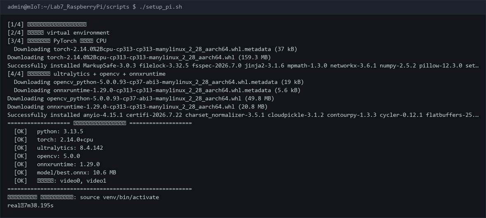
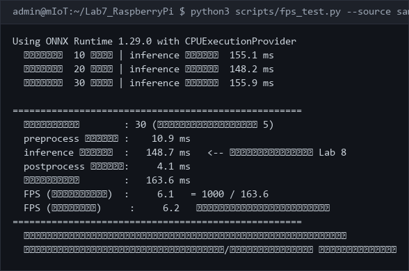
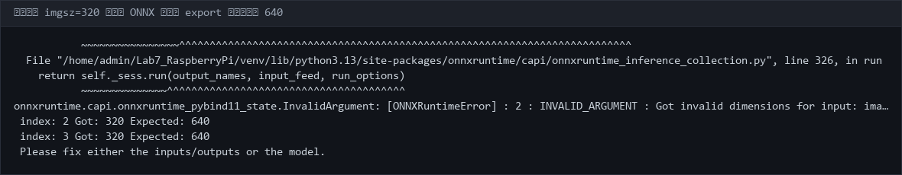
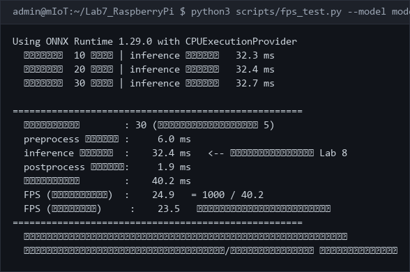

best.onnx ที่ทำมาตั้งแต่ Lab 4 ไปรันจริงบน Raspberry Pi 5.sh ที่รันบนตัว Pi
งานเตรียมโมเดล (Lab 6) ยังทำบน Windows เหมือนเดิม แล้วค่อยโอนไฟล์ข้ามมาbest.onnx จาก Lab 6 แล้ว (อยู่ที่ runs\detect\full\weights\)sudo raspi-config > Interface Options > SSH)รันบนตัว Pi (ต่อจอ/คีย์บอร์ด หรือ SSH เข้าไปครั้งแรก):
hostname -I hostname
192.168.0.34 mIoT
| สิ่งที่เห็น | แปลว่า |
|---|---|
192.168.0.34 | IP ของ Pi ใช้ต่อ SSH ได้ตรง ๆ แต่เปลี่ยนได้เมื่อรีบูตหรือย้ายเครือข่าย |
mIoT | ชื่อเครื่อง ใช้เป็น mIoT.local ได้ (mDNS) นิ่งกว่า IP แนะนำให้ใช้ตัวนี้ |
ping mIoT.local ถ้าไม่ตอบให้ใช้ IP แทนรันบนเครื่อง Windows ที่โฟลเดอร์ Lab7_RaspberryPi\scripts:
.\copy_to_pi.bat admin@mIoT.local
[1/3] Creating target folders on the Pi
[2/3] Copying runs\detect\full\weights\best.onnx
best.onnx 100% 10MB 5.8MB/s 00:01
[3/3] Copying the Lab 7 scripts
setup_pi.sh 100% 2451 1.5MB/s 00:00
run_detect_pi.sh 100% 938 1.1MB/s 00:00
fps_test.py 100% 4602 3.2MB/s 00:00
Done. Now SSH into the Pi and run:
cd ~/Lab7_RaspberryPi/scripts
chmod +x *.sh
./setup_pi.sh
copy_to_pi.batset MODEL=runs\detect\full\weights\best.onnx
if not exist "%MODEL%" (
echo [ERROR] %MODEL% not found.
echo Run Lab6_Export\scripts\export_onnx.bat first.
)
ssh %TARGET% "mkdir -p ~/Lab7_RaspberryPi/model ~/Lab7_RaspberryPi/scripts"
scp "%MODEL%" %TARGET%:~/Lab7_RaspberryPi/model/best.onnx
| if not exist | ตรวจว่ามีโมเดลจริงก่อนจะเริ่มโอน ถ้าข้ามขั้นนี้ไป นักศึกษาที่ยังไม่ได้รัน Lab 6 จะได้ error จาก scp ที่อ่านไม่รู้เรื่อง แทนที่จะรู้ว่าต้องกลับไปทำอะไร |
| ssh ... mkdir -p | สร้างโฟลเดอร์ปลายทางก่อน เพราะ scp ไม่สร้างโฟลเดอร์ให้เอง จะฟ้อง No such file or directory เฉย ๆ |
| %TARGET% | รับ user@host จากบรรทัดคำสั่ง ไม่ hardcode ไว้ เพราะแต่ละกลุ่มใช้ Pi คนละเครื่อง |
ssh-keygen -t ed25519 type $env:USERPROFILE\.ssh\id_ed25519.pub | ssh admin@mIoT.local "mkdir -p ~/.ssh; cat >> ~/.ssh/authorized_keys"บาง Pi ปิด login ด้วยรหัสผ่านไว้ตั้งแต่แรก กรณีนั้นต้องใส่คีย์จากหน้าจอที่ต่อกับ Pi โดยตรง
SSH เข้า Pi แล้วรัน:
ssh admin@mIoT.local cd ~/Lab7_RaspberryPi/scripts chmod +x *.sh ./setup_pi.sh

torch-2.14.0+cpu ขนาด 159.3 MB — เครื่องหมาย +cpu คือหลักฐานว่าดึงมาถูก index แล้ว| บรรทัดในผลลัพธ์ | ต้องดูอะไร |
|---|---|
[3/4] ติดตั้ง PyTorch รุ่น CPU | ขั้นที่นานที่สุด โหลด 159 MB ถ้าเน็ตช้าอาจกินเวลาหลายนาที |
torch: 2.14.0+cpu | ต้องมี +cpu ต่อท้าย ถ้าไม่มีแปลว่าดึงรุ่น CUDA มา ให้ลบ venv แล้วรันใหม่ |
opencv: 5.0.0 | มาจากล้อ opencv-python สำหรับ aarch64 ขนาด 49.8 MB — ไม่ต้องลง libopencv-dev ให้เปลืองพื้นที่ |
model/best.onnx: 10.6 MB | ยืนยันว่าไฟล์จาก Step 2 มาถึงจริง ขนาดต้องตรงกับบนเครื่อง Windows |
กล้อง: video0, video1 | กล้อง 1 ตัวมักขึ้น 2 device — video0 คือภาพ ส่วน video1 เป็น metadata |
pip install ultralytics เฉย ๆ ถึงพัง Pi ได้บนเครื่อง Windows ที่ผ่านมา pip install ultralytics ทำงานได้เลยไม่ต้องคิดอะไร แต่บน Pi
คำสั่งเดียวกันจะไปดึง torch รุ่นที่ผูกกับ CUDA ลงมา
Downloading torch-2.14.0-cp313-cp313-manylinux_2_28_aarch64.whl (454.0 MB) Collecting nvidia-cublas==13.1.1.3.* Collecting nvidia-cudnn-cu13==9.24.0.43 Collecting nvidia-nccl-cu13==2.30.7 Collecting triton
สาเหตุคือ PyPI มีล้อ (wheel) ของ torch สำหรับ aarch64 อยู่ชุดเดียว และชุดนั้นสร้างมาเพื่อ
บอร์ด NVIDIA Jetson / GH200 ซึ่งเป็น aarch64 เหมือนกันแต่มี GPU NVIDIA pip แยกไม่ออกว่า
เครื่องปลายทางเป็น Jetson หรือ Raspberry Pi มันเห็นแค่ว่า "สถาปัตยกรรมตรงกัน" ก็ดึงมาให้
ผลคือดาวน์โหลดหลาย GB ลง SD card ของ Pi เพื่อไปเก็บไลบรารี CUDA ที่ไม่มีวันได้ใช้ ทางแก้คือชี้ไป index ที่มีเฉพาะรุ่น CPU:
pip install torch torchvision --index-url https://download.pytorch.org/whl/cpu
| ขนาดล้อ torch | ไลบรารี NVIDIA ที่พ่วงมา | |
|---|---|---|
| PyPI ปกติ (ผิด) | 454.0 MB | 20 แพ็กเกจ (cuBLAS, cuDNN, NCCL, triton ...) |
| index รุ่น CPU (ถูก) | 159.3 MB | 0 แพ็กเกจ |
บทเรียนที่ใหญ่กว่านั้น: เวลาย้ายงานลง Edge สิ่งที่พังก่อนโค้ดเสมอคือชุดไลบรารี เพราะเครื่องปลายทางไม่เหมือนเครื่องที่พัฒนา ทั้งสถาปัตยกรรม CPU ระบบปฏิบัติการ และเวอร์ชัน Python
setup_pi.shset -euo pipefail
cd "$(dirname "$0")/.."
python3 -m venv venv
./venv/bin/pip install torch torchvision \
--index-url https://download.pytorch.org/whl/cpu
./venv/bin/pip install ultralytics opencv-python onnxruntime onnx
| set -euo pipefail | ให้สคริปต์หยุดทันทีที่คำสั่งไหนล้มเหลว ไม่ใช่ทำต่อไปเงียบ ๆ แล้วจบด้วยข้อความ "เสร็จแล้ว" ทั้งที่ไม่ได้ติดตั้งอะไรเลย |
| cd "$(dirname "$0")/.." | ย้ายไปโฟลเดอร์แม่ของสคริปต์เสมอ ทำให้ venv กับ model ไปอยู่ที่เดียวกันไม่ว่าจะสั่งรันจากที่ไหน |
| ./venv/bin/pip | เรียก pip ของ venv ตรง ๆ แทนการ source activate ก่อน — สั้นกว่าและพลาดยากกว่า |
| onnx | ต้องใส่ด้วย ไม่งั้นตอนรันครั้งแรก ultralytics จะแอบติดตั้งให้เอง (ขึ้น AutoUpdate) ซึ่งพังถ้าตอนนั้นไม่มีเน็ต |
วัดด้วยภาพชุดเดิมทุกครั้ง จะได้ตัวเลขที่เทียบกันได้ ไม่แกว่งตามสิ่งที่กล้องเห็น:
cd ~/Lab7_RaspberryPi ./venv/bin/python scripts/fps_test.py --source samples --frames 30

| ค่าที่วัดได้ | คืออะไร | ทำไมต้องดู |
|---|---|---|
preprocess 10.9 ms | ย่อภาพ ใส่ letterbox แปลงเป็น tensor | งานของ CPU ล้วน ๆ ยิ่งภาพเข้าใหญ่ยิ่งนาน |
inference 148.7 ms | เวลาที่โมเดลคิดจริง ๆ | ตัวหลักที่ต้องจด เอาไปเทียบกับ AI HAT ใน Lab 8 |
postprocess 4.1 ms | ถอดกล่อง ทำ NMS | เล็กน้อยเมื่อเทียบกับ inference บนเครื่องนี้ |
FPS (เฉพาะโมเดล) 6.1 | 1000 / 163.6 | เพดานทางทฤษฎีถ้าอ่านภาพเข้ามาได้ฟรี |
FPS (ทั้งระบบ) 6.2 | วัดจากเวลาจริงทั้งวง | ตัวเลขที่ผู้ใช้เห็นจริง รวมเวลาอ่านภาพเข้ามาด้วย |
.onnx บน CPU ได้ 40.4 ms
ส่วน Pi 5 ใช้ 148.7 ms — ช้ากว่าราว 3.7 เท่า นี่คือราคาของการย้ายลง Edgefps_test.pyHERE = Path(__file__).resolve().parent
DEFAULT_MODEL = HERE.parent / "model" / "best.onnx"
for n, frame in enumerate(frames):
results = model(frame, **predict_kwargs)
if n < args.warmup:
continue # ทิ้งรอบอุ่นเครื่อง
speed = results[0].speed # ultralytics วัดมาให้เป็น ms
pre.append(speed["preprocess"])
inf.append(speed["inference"])
post.append(speed["postprocess"])
| Path(__file__) | อ้างตำแหน่งจากตัวไฟล์สคริปต์ ไม่ใช่ current directory — ถ้าใช้ "../model/best.onnx" ตรง ๆ สคริปต์จะหาโมเดลเจอเฉพาะตอนสั่งรันจากในโฟลเดอร์ scripts เท่านั้น |
| args.warmup | ทิ้ง 5 เฟรมแรก เพราะรอบแรกต้องโหลดโมเดลและจอง buffer ก่อน ช้ากว่าปกติหลายเท่า (หลักการเดียวกับ N_WARMUP ใน Lab 6) |
| results[0].speed | ultralytics จับเวลาแยก 3 ท่อนมาให้แล้ว ไม่ต้องจับเอง ทำให้เห็นว่าช้าตรงไหน ไม่ใช่แค่ "ช้า" |
| --source ../samples | รับได้ทั้งเลข index กล้องและโฟลเดอร์ภาพ ทำให้วัดผลซ้ำได้เหมือนเดิมทุกครั้ง และทดสอบได้แม้ยังไม่มีกล้อง |
วัดด้วยกล้องก่อน (สั่งผ่าน SSH ได้ ไม่ต้องมีหน้าจอ):
./venv/bin/python scripts/fps_test.py --source 0 --frames 20
แหล่งภาพ: กล้อง index 0 Loading /home/admin/Lab7_RaspberryPi/model/best.onnx for ONNX Runtime inference... Using ONNX Runtime 1.29.0 with CPUExecutionProvider วัดแล้ว 10 เฟรม | inference ล่าสุด 145.2 ms วัดแล้ว 20 เฟรม | inference ล่าสุด 144.6 ms ==================================================== เฟรมที่วัด : 20 (ทิ้งรอบอุ่นเครื่อง 5) preprocess เฉลี่ย : 9.8 ms inference เฉลี่ย : 145.6 ms <-- จดตัวนี้ไปใช้ใน Lab 8 postprocess เฉลี่ย: 2.8 ms รวมต่อเฟรม : 158.2 ms ====================================================
ถ้าอยากเห็นภาพพร้อมกรอบ ต้องรันที่หน้าจอที่ต่อกับ Pi โดยตรง (ผ่าน SSH เปล่า ๆ เปิดหน้าต่างไม่ได้):
./run_detect_pi.sh
imgsz=320 ตอนรัน — มันจะพัง ไม่ใช่แค่ไม่มีผล
ลองดูว่าเกิดอะไรขึ้นก่อน แล้วค่อยอ่านคำอธิบาย./venv/bin/python scripts/fps_test.py --source samples --imgsz 320

Got: 320 Expected: 640เหตุผลอยู่ที่ Lab 6 ตอน export เราสั่ง imgsz=640 ไฟล์ .onnx จึงถูก
"เชื่อม" ขนาดภาพเข้าไว้ตายตัวในกราฟการคำนวณแล้ว ต่างจาก .pt ที่ยืดหยุ่นได้ตอนรัน
ทางแก้คือกลับไป export ใหม่ที่ Lab 6 — รันบนเครื่อง Windows:
yolo export model=runs\detect\full\weights\best.pt format=onnx imgsz=320 simplify=True
แล้วโอนไฟล์ไป Pi และวัดใหม่:

| ขนาดภาพเข้า | inference | FPS | mAP50 | mAP50-95 |
|---|---|---|---|---|
| 640 × 640 | 148.7 ms | 6.1 | 0.9750 | 0.8311 |
| 320 × 320 | 32.4 ms | 24.9 | 0.9471 | 0.7795 |
| ต่างกัน | เร็วขึ้น 4.6 เท่า | +18.8 | −0.028 | −0.052 |
GPU ของโน้ตบุ๊กมีหน่วยคูณเมทริกซ์หลายพันตัวทำงานพร้อมกัน ส่วน Pi 5 มีแค่ CPU 4 คอร์ ที่ต้องแบ่งเวลาไปทำงานอื่นของระบบด้วย งาน convolution ของ YOLO จึงถูกไล่ทำทีละส่วน
ทางเลือกในการเร่งความเร็วบน Edge เรียงจากง่ายไปยาก:
| วิธี | ได้เท่าไร | เสียอะไร |
|---|---|---|
| ลดขนาดภาพเข้า (ทำใน Lab นี้) | 4-5 เท่า | ความแม่นยำลดลงเล็กน้อย ของเล็กหายง่ายขึ้น |
| ใช้โมเดลเล็กลง (n → กว่านั้นไม่มีแล้ว) | ไม่เหลือให้ลด | YOLO11n เล็กสุดในตระกูลอยู่แล้ว |
| Quantization (float32 → int8) | 2-4 เท่า | ต้องมีชุดข้อมูลปรับเทียบ และความแม่นยำลดลง |
| ใช้ตัวเร่งเฉพาะทาง (NPU) | หลายสิบเท่า | ต้องซื้อฮาร์ดแวร์ และแปลงโมเดลด้วยเครื่องมือเฉพาะ → Lab 8 |
สังเกตว่าสองวิธีแรกคือการยอมลดคุณภาพงาน ส่วนวิธีสุดท้ายคือการเปลี่ยนฮาร์ดแวร์ ซึ่งเป็นเหตุผลที่อุปกรณ์ AI ราคาถูกในตลาดถึงเริ่มมี NPU ติดมาด้วยกันหมด
| อาการ / ข้อความที่ขึ้น | สาเหตุ | วิธีแก้ |
|---|---|---|
./setup_pi.sh: line 3: set: -: invalid option$'\r': command not foundแล้วสคริปต์บอกว่า "เสร็จแล้ว" ทั้งที่ไม่ได้ทำอะไร |
ไฟล์ .sh ถูกคัดลอกมาจาก Windows แบบที่ยังมีอักขระขึ้นบรรทัดใหม่ของ Windows (CRLF) ติดมาด้วย bash อ่านไม่ออก |
รีโปตั้ง .gitattributes บังคับ *.sh เป็น LF ไว้แล้ว ถ้ายังเจอให้แก้บน Pi ด้วยsed -i 's/\r$//' *.sh |
error: externally-managed-environment |
Raspberry Pi OS รุ่นใหม่ห้าม pip install ลงระบบตรง ๆ (PEP 668) เพื่อกันไปทับแพ็กเกจของ apt |
ต้องอยู่ใน venv เสมอ ถ้าเจอ error นี้แปลว่า venv ยังไม่ถูกสร้าง ให้ดูข้อความก่อนหน้าว่า python3 -m venv venv ล้มเหลวเพราะอะไร |
INVALID_ARGUMENT : Got invalid dimensions for input: imagesindex: 2 Got: 320 Expected: 640 |
สั่ง imgsz ไม่ตรงกับตอน export ONNX ล็อกขนาดภาพไว้ตายตัว |
ไม่ต้องใส่ imgsz ตอนรัน ถ้าอยากได้ขนาดอื่นต้องกลับไป export ใหม่ที่ Lab 6 |
ติดตั้งนานผิดปกติ ขึ้น Collecting nvidia-cublas, Collecting triton |
pip ดึง torch รุ่น CUDA มาให้ (ดูหัวข้อทฤษฎีใน Step 3) | กด Ctrl+C หยุด ลบ venv แล้วรัน setup_pi.sh ที่แก้แล้วซึ่งชี้ไป index รุ่น CPUล้างของที่โหลดค้างด้วย pip cache purge |
เปิดกล้อง index 0 ไม่ได้ |
ไม่มีกล้อง หรือระบบมองไม่เห็น | เช็คด้วย lsusb และ ls /dev/video*Pi Camera ใช้ rpicam-hello --list-cameras แทน |
requirements: AutoUpdate success ตอนรันครั้งแรก |
ultralytics ติดตั้งแพ็กเกจ onnx ให้เองระหว่างรัน |
ไม่อันตราย แต่จะพังถ้าตอนนั้นไม่มีเน็ต — setup_pi.sh ที่แก้แล้วลง onnx ไว้ตั้งแต่ต้น |
SSH เข้าไม่ได้ ขึ้น Permission denied (publickey) |
Pi ปิดการล็อกอินด้วยรหัสผ่านไว้ รับเฉพาะ SSH key | ต้องเอา public key ไปใส่ที่ ~/.ssh/authorized_keys บน Pi จากหน้าจอที่ต่อกับ Pi โดยตรง |
/dev/video0:
setup_pi.sh ใช้เวลา 7 นาที 38 วินาที ได้ venv ขนาด 1.4 GB —
โมเดล YOLO11n ONNX ที่ 640 ได้ inference 148.7 ms (6.1 FPS) และที่ 320 ได้ 32.4 ms (24.9 FPS)
ตัวเลข mAP มาจากการ val บน test split ของ african-wildlife (227 ภาพ)inference เฉลี่ยที่วัดได้เอง (จดไว้ ต้องใช้ต่อใน Lab 8)imgsz=320 ตอนรันแล้วถึงพัง แทนที่จะแค่ช้าเท่าเดิมpip install ultralytics บน Pi ถึงต้องระวังเรื่อง index ของ torch